For contact info, please see the Sci.Electronics.Repair FAQ Email Links Page.
Copyright © 1994-2018
Reproduction of this document in whole or in part is permitted if both of the
following conditions are satisfied:
1. This notice is included in its entirety at the beginning.
All Rights Reserved
2. There is no charge except to cover the costs of copying.
DISCLAIMER
The information in this document
is intended for use in hobbyist, experimental, research, and other
applications where a bug in the hardware, firmware, or software, will not
have a significant impact on the future of the Universe or anything else.
We will not be responsible for any consequences
of such bugs including but not limited to damage to the $100,000,000
wafer FAB that was purchased on eBay for $1.98 + shipping, financial
loss from the waste of
28 spools of ABS due to the office 3-D printer fabricating a part with
random dimensions due to loss of lock, or bruising to your pet's ego
from any number of causes directly or indirectly related to
the implementation and use of this system. ;-)
ACKNOWLEDGMENT
Thanks to Jan Beck for getting me interested
in microcomputer development. If anyone had told me
six months ago that I'd be writing code in C, MIPS assembly language,
and Visual Basic - and enjoying it (sort of) - I would have suggested
they were certifiably nuts. ;-)
Links to his Web information may be found under
References.
Such technology tends to be expensive, at least if a turn-key solution is desired. The typical price of a basic commercial system can easily exceed $20,000. While there is a great deal of surplus equipment available on eBay and elsewhere, putting together a usable system is still typically several thousand dollars. In this article, we describe an implementation that can be assembled by a dedicated hobbyist or researcher for less than $200 depending on skill level and the desire to use as few commercial (or at least interferometer-specific) parts as possible. It is based on the type of common HeNe laser tube that were manufactured by the hundreds of thousands annually for use in grocery store barcode scanners, and are still widely available on the surplus market. A permanent magnet converts it into a two-frequency Zeeman laser, and some optics and an Arduino-compatible microprocessor board stabilizes the laser to produce the required F1 and F2 optical frequency components. Multiple interferometer configurations may be constructed from a few basic types of new or surplus low cost general purpose optics in place of those intended for commercial interferometers. The measurement electronics are implemented using a second higher performance microprocessor with custom firmware and a Windows-based Graphical User Interface (GUI) for readout, plotting, and logging. Absolute displacement (change in position) accuracy down to better than 1/20th wavelength at 633 nm and a detectable displacement change below 1 nm is readily achievable. Velocity as well as frequency spectra (via a real time DFT) are also computed automatically. Measurement of angle and straightness (among others) are also possible with appropriate interferometer optics configurations.
So this is just one step up from using beach sand and iron ore for raw materials with stone tools and bear skins for assembly. :) But if properly calibrated, the performance should be comparable to that of commercial metrology systems.
While not currently "open-source", technical support including electronic schematics and source code for the firmware is available to all users, and source code for the Windows GUIs can be made available at little to no cost for non-commercial users. The development environments are freely available from their respective suppliers.
The system consists of several distinct and essentially independent subsystems and may be built up in stages with complete testing once each one is completed:
Either of the three major subsystems - laser, optics, display - can be swapped out for a commercial implementation should that ever be desired (or if the builder doesn't want to construct that particular subsystem) as the interfaces are fully compatible with commercial systems from HP/Agilent/Keysight, Excel, and others.
However, this is NOT an inexpensive solution to repairing your $100,000,000.00 wafer FAB, or the one you picked up on eBay for $1.98 + shipping. ;-) The effort required at each stage makes it extremely NOT cost effective for a commercial effort, especially if engineers' time has any value. Furthermore, the reliability of a system constructed in this manner could be questionable unless a major effort is made in the design and construction. It is intended as a challenge and learning experience but may also have research applications where all aspects of its design and implementation can be tweaked.
This article begins with background material on interferometers for metrology applications starting with the basic Michelson interferometer and progressing through those typically used with single and two-frequency lasers. Then each of the subsystems above are covered in more detail.
Note: Off-page links open in a single new tab or window depending
on your browser's settings.
In short, a light beam is split into two parts which are bounced off of a pair of reflectors and recombined at a detector. Any change in the relative path lengths of the two "arms" formed by the reflectors results in a phase shift between the waves in the two beams resulting in constructive or destructive interference, which can be measured and converted to displacement (change in position) down to nanometer precision. All other types of measurements made by these systems are based on opto-mechanical configurations designed such that changes in the measured variable are detectable by what is in essence a Michelson interferometer.
Where the Path Length Difference (PLD) between the two arms is small, the requirements for the laser are not very stringent. In fact, for very small PLD, an LED or even a totally incoherent source like an incandescent lamp may be substituted for the laser. However, to be useful for the PLD necessary for most applications (millimeters to 10s of meters), the light source must be a laser. And not just any laser, but one that has a narrow "line-width". While the popular concept of a laser is of a light source that is monochromatic (single color or wavelength), in reality most lasers do not even come close. It takes careful design and implementation to achieve that. For these metrology applications the laser should ideally produce an output that is a single optical frequency with a line-width approaching zero. In practice, it isn't that narrow but can result in a line-width of much less than 1 MHz, resulting in a usable PLD of 100s of meters. A two frequency laser (the type that will be relevant in the remainder of this article) produces a pair of narrow line-width components typically separated by a few MHz, each of which has similar properties.
The simple Michelson interferometer setup can be used in a metrology system, but it has severe limitations which make it impractical for most applications. Alignment is extremely critical. Even the slightest deviation from perfect alignment will result in a reduction or loss of signal. Yet when perfectly aligned, one half of the optical power from the laser reflects directly back into the laser - which may destabilize it resulting in erratic fluctuations of its output in amplitude, optical phase, optical frequency, and polarization.
The first enhancement of the Michelson interferometer is to add a means of separating the outgoing and return beams so that there is vitally no optical power returned to the laser. The simplest way to do this is to replace the mirrors with Retro-Reflectors (RRs), typically cube-corner (trihedral) prisms, which have the property of returning the beam directly back parallel with the outgoing beam, but which may have an offset. In this way, virtually none of the reflected light ends up back at the laser. The use of the RRs also greatly reduces the sensitivity to alignment as any change in their angle is converted to a small change in the distance between the outgoing and return beams, but they remain parallel.
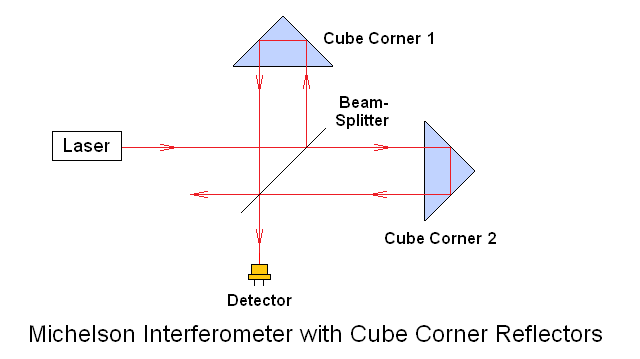
The second enhancement is to use a polarizing beam-splitter in place of the 45 degree partially reflecting mirror (used as a beam-splitter).
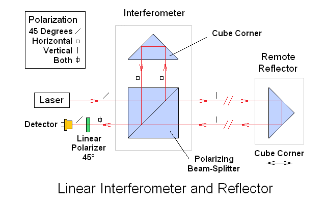
The beams reflected to the two arms of the interferometer then have orthogonal polarization which effectively makes them independent until they are combined at the detectors and means the maximum amount of the laser optical power is available - nothing exits out the unused side of the beam-splitter as it would in the basic Michelson setup, above. (However, about half the power is lost in the detection scheme that is typically used.) The result is then one of the most widely used configurations - the Linear Interferometer (LI).
To make use of the LI in a practical metrology system, the setup is a bit more complex, primarily due to the need to determine the direction of position change and account for the actual laser power to optimize the measurement accuracy.
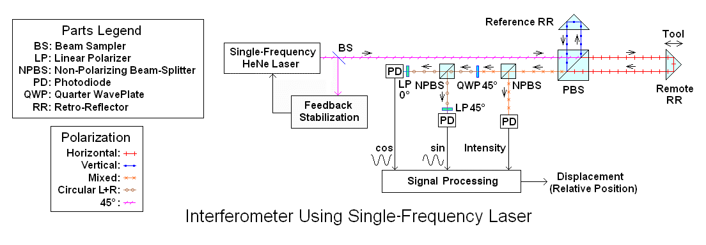
This configuration with a single frequency laser with, polarizing optics, and cube-corner retro-reflectors is called a "homodyne interferometer" and is used in some applications but has limitations. The primary one is that signal amplitude depends critically on the returned optical power, which can vary based on the age of the laser, alignment, and dirt on the optics. That is why there is generally an "Intensity" detector to keep track of the signal strength and adjust the processing accordingly. Electronic and optical noise is also an issue.
For these reasons, the approach based on a two-frequency laser called a "heterodyne interferometer" is much more common in critical applications, especially where a large amount of movement (change in displacement) is involved. The optics including the polarizing beam-splitter and retro-reflectors are similar, but instead of a laser producing a single optical frequency, the laser produces two closely spaced optical frequencies, F1 and F2 typically between 1 and 20 MHz apart. These have orthogonal polarization and are separated by the polarizing beam-splitter in the same way as with the single frequency laser. This approach is virtually immune to changes in beam power due to laser aging or contamination along the optical paths and less sensitive to changes in alignment. The difference or "split" frequency is in essence a carrier so that electronic processing can be done in the AC domain. Even though the laser output is no longer a single line, as a result of the way the processing is done, the effective PLD and change in PLD can still be hundreds of meters and is not directly affected by their difference, but only on the line-width of each component, which are still very narrow. The main disadvantage of the heterodyne approach is that the value of the difference of "split" frequency limits the maximum rate of motion in one direction. More on this below.
Nearly every microchip is made in a FAB using multiple lithography steppers controlled by interferometers using two frequency lasers. Many precision and custom optical components are produced on diamond turning lathes guided by similar devices. And there are numerous other similar applications. Even high precision 3-D printers may employ laser interferometers
There are several ways of implementing a two-frequency laser. A single frequency laser can have part of its beam shifted in optical frequency by an Acousto-Optic Modulator (AOM). This is used in several high performance Zygo and Agilent/Keysight systems where a split frequency of up to 20 MHz is desirable to achieve rapid stage movement. Or two single frequency lasers can be "offset locked" to each-other opto-electronically to achieve similar results, though this approach is not to be the best of our knowledge used in any commercial systems due to its complexity and cost. These techniques do have the benefit that the two optical frequencies can be separated by an arbitrary amount enabling a potentially greater maximum slew rate of the moving stage.
However, the most common technique is also perhaps the most clever and elegant: By applying an axial magnetic field of up to a few hundred Gauss to a HeNe laser tube, the neon gain curve is split into two parts by the Zeeman effect separated in optical frequency by approximately 2.8 MHz/Gauss due to the Zeeman effect. Where the tube meets certain criteria including being random polarized and having minimal mirror (and other) asymmetry, a lasing line centered between the gain curves will be split into left and right circular polarized components (originating from each of the gain curves) with a separation of up to a few MHz. Since these come from the same laser tube, they inherently have identical beam characteristics and are perfectly aligned with each-other. A Quarter WavePlate (QWP) converts the left and right circular polarization to orthogonal linear polarization resulting in the required F1/F2 frequency components aligned with the horizontal and vertical axes of the laser. The axial Zeeman HeNe laser is found in all HP/Agilent/Keysight 55xx lasers as well as lasers from several other companies, and is by far the most common approach in use today and for the past 40+ years. While the Zeeman approach is limited to a practical maximum split frequency of around 4 MHz, corresponding to a maximum stage slew rate of over 1 meter per second using LI optics, which is adequate for most applications. (Zeeman split frequencies up to over 7 MHz are possible but at very low laser power due to the height of the neon gain curves in the overlap region approaching zero, but may be used in the some specialized applications.)
Thus, the output of the laser consists of a pair of optical frequency components called "F1" and "F2" that are orthogonally polarized and differ by the split frequency. The laser also provides an electrical signal based on |F2-F1| at the split frequency called "REF" derived from an optical receiver inside the laser. Using a "Linear Interferometer" (LI), one frequency component is bounced off a fixed retro-reflector while the other one bounces off a retro-reflector mounted on the "Tool" or target whose position is to be measured.
F1 and F2 can be interchanged in function with the only effects being that the sign of any detected movement is swapped and that the actual optical wavelength being used for the measurement will be whichever one is sent to the Tool. For the following we assume F1 goes to the Tool. One may ask: Since F1 is not equal to F2, aren't there calibration issues since strictly speaking, the "yardstick" is based on the optical component that goes to the Tool? In principle yes, but with a difference of only a few MHz between F1 and F2, any error from using the wrong one is typically less than 0.01 ppm (parts per million) which is usually of no consequence.
They return and are combined in the interferometer. After passing through a polarizer at 45 degrees to a photodiode in the optical receiver, the difference in optical frequency is converted to an electrical signal called "MEAS". When the Tool retro-reflector is stationary, MEAS equals REF. When the Tool retro-reflector moves, the difference frequency between F1 and F2 - and thus MEAS - changes due to the Doppler effect. Comparing the phase of the fixed REF signal (|F2-F1|) derived from the beam out of the laser to the changing MEAS signal (|F2-F1+ΔF1|) determined by the Tool motion results in the displacement.
However, one issue alluded to above is that the value of the laser's REF frequency limits the maximum stage slew rate. If the velocity of motion is high enough in the direction where MEAS decreases to cause it to approach or pass through 0 Hz (MEAS=REF-ΔF1<=0), tracking would be lost. So the basic specification for the laser includes the minimum REF frequency (if there is a range as there would be with a Zeeman laser). For example, the 5517B has a spec'd REF frequency range of 1.9 to 2.4 MHz resulting in a maximum slew rate of 0.5 meters per second in that direction using a linear interferometer. Motion in the opposite direction has no such limit and in principle, a system could be designed to take advantage of that.

For the Linear Interferometer (LI), a change of phase of 360 degrees at the optical receiver represents a displacement of 1/2 wavelength of the laser light (due to the beam to the Tool going out and back). For the red HeNe laser, this is approximately 316.5 nm (633/2 nm). (The precise specifications for HP/Agilent/Keysight lasers are a vacuum wavelength of 632.991353 nm corresponding to an optical frequency of 473.612248 THz.)
There are two other common interferometers for displacement measurements that are widely used.

The "Plane Mirror Interferometer" (PMI) enables the remote reflector to be a mirror rather than a cube-corner, thus permitting translation perpendicular to the measurement axis. The RRs inside the PMI provide the required offset to avoid back-reflection into the laser. The "Single Beam Interferometer" (SBI) requires much less space while still maintaining the same beam size by using a pair of Quarter WavePlates (QWPs) to minimize back-reflections to the laser. As far as the measurements are concerned, there are no changes for the SBI, and a factor of 2X in resolution for the PMI because of the double pass resulting in a basic resolution of approximately 158 nm.
Other arrangements of the components of the interferometer (sort of like reconfiguring LEGOs™) will result in equivalent behavior as long as the beam paths are similar through the interferometer and polarization remains at 0 or 90 degrees with respect to the laser baseplate. For example, the Tool could move at right angles to the laser by moving the retro-reflector from the top to the side. Then F2 would go to the Tool instead of F1. The only change in the measurement would possibly be to flip the sign of the displacement.
Multiple axes can be accommodated by splitting the laser's output and using separate interferometers, optical receivers, and channels for the measurement electronics.
There are a variety of more complex interferometers including those for higher stability or higher resolution displacement, or to support multiple axes in one interferometer block.
Other configurations exist for measuring angle, straightness, flatness, squareness, and more.
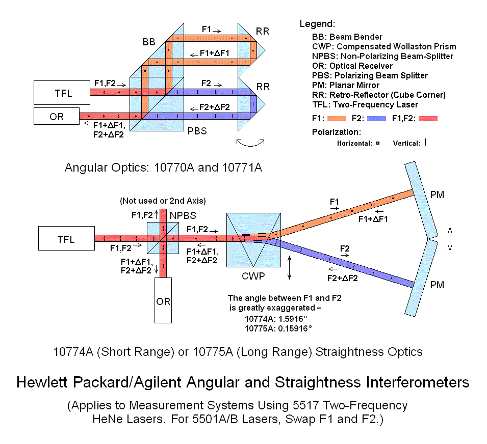
But they are all variations on the basic Michelson interferometer. Most only result in changes in the calibration factor, except for angle where a slightly more complex calculation is involved. Any type of physical movement that can be converted into a change in the PLD can be measured or controlled using these techniques.
And by allowing the Reference retro-reflector to move or by changing
the reference path length in some other way (as with the angular
interferometer), differential measurements
can be made as well. And as to the difference between F1 and F2, for the
same reason that this is generally of no concern with basic measurements,
any error would typically be less than 0.01 ppm. So if the differential path
length changed by 1 meter, there would be a 10 nm error in the measurement.
Should that actually be significant, a double pass interferometer like the
PMI could be used with the beams for the two passes being reflected
from separate mirrors, or a pair of interferometers could be employed
with the difference calculated in the measurement electronics.
It turns out that the red (633 nm) HeNe has several characteristics that make it the ideal laser for these metrology applications even more than 50 years after its invention. The first is that because the gain bandwidth of neon is only around 1.6 GHz, even without accounting for other factors which affect the precise location of the gain curve and can shift it by up to around +/-1 GHz, the optical frequency would already be good to around 1 part in 180,000 or 5.56 parts-per-million (ppm). And by specifying the isotope ratio of 20Ne to 22Ne in the gas-fill, the approximate temperature and pressure inside the tube, and electronically locking the lasing modes relative to the Ne gain curve, this can be easily improved by a factor of 100 or more. So the optical frequency is locked to an intrinsic characteristic of the HeNe lasing process which is absolute and doesn't change much over the life of the tube. This could not be done with anywhere similar precision for diode or solid state lasers due to their orders of magnitude wider gain bandwidth. And while locking a diode or solid state laser to a reference frequency like a specific spectral line in a gas cell or an external high finesse optical cavity is possible, the cost of such an implementation would be so high that it is simply not practical for a commercial system.
Including even a brief introduction to the principles of the Zeeman HeNe laser would require too much space, and understanding how the thing works is really not essential for a metrology user. But if interested, refer to the Laser FAQ chapter on Stabilized HeNe Lasers, and specifically, the sections starting with Hewlett-Packard/Agilent/Keysight Stabilized HeNe Lasers, or the hairy math-heavy technical literature, mostly from the 1960s (!!). :) But here's the instant explanation similar to what was given above: When an axial magnetic field is applied to a HeNe laser tube meeting specific requirements, it will split the neon gain curve into two parts shifted up and down in frequency such that when a single lasing mode is centered between them, it will split into two modes with left and right circular polarization separated by up to a few MHz. There, now you know even if it wasn't necessary. ;-) But a few more simplified details may be found in HP/Agilent 5517 Zeeman-Split HeNe Laser Mode Sweep Animation (Powerpoint).
To construct a useful system, it's sufficient to be able to select an appropriate tube and magnets, convert to F1/F2 frequency components, and implement the stabilization. And while not to underestimate the required effort, it is all straightforward and well within the capabilities of someone with a basic technical background and experience.
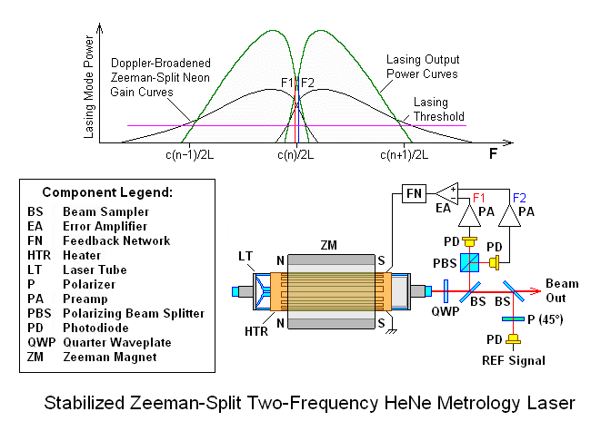
Laser Tube:
The requirements for the HeNe laser tube for a two-frequency Zeeman laser are:
HeNe laser tubes that satisfy these requirements were used in many applications. Hand-held and in-counter barcode scanners were perhaps the most common with 100s of thousands of units deployed annually during their peak in the 1980s. Others include alignment, positioning, and document scanning. It's mostly a coincidence and ironic that they are also suitable to be used as Zeeman lasers in very sophisticated metrology applications, a byproduct of low power (under 1 mW) making most of them 150 mm in total length or less and no requirement for a polarized output with its increased cost.

Fortunately, most of these tubes are so-called "hard-sealed" so that they don't leak significantly over any time scale that matters and thus a laser that was unused or healthy and put on the shelf in the 1980s will generally be perfectly usable 35+ years later with minimal if any reduction in performance.
Most tubes meeting the requirements listed above from Melles Griot, Siemens/LASOS, and JDS Uniphase have been found to be suitable for a Zeeman laser. However, there are some Far East imports that may not work well or at all for a variety of reasons. So purchasing one of these low cost new tubes may turn out to be a poor decision.
Hewlett Packard (HP) developed the first practical (or at least widely used) metrology systems based on two-frequency HeNe Zeeman lasers. Since the early 1970s, HP (later Agilent and now Keysight) has dominated the field. While they have always used custom HeNe laser tubes, other manufacturers like Excel Precision have opted for more conventional tubes which are mostly only slight variations on standard models and virtually identical to the barcode scanner variety. The diagram below shows a comparison of the two. The HP/Agilent design is the most common one, having been used for over 30 years. Note its complexity compared to the barcode scanner tube. The helical winding near the center is the internal resistance heater used for cavity length control, wound on a solid precision ground glass "mirror spacing rod" which "floats" between the springs at each end. All that complexity greatly increases cost without really increasing performance in any fundamental way.
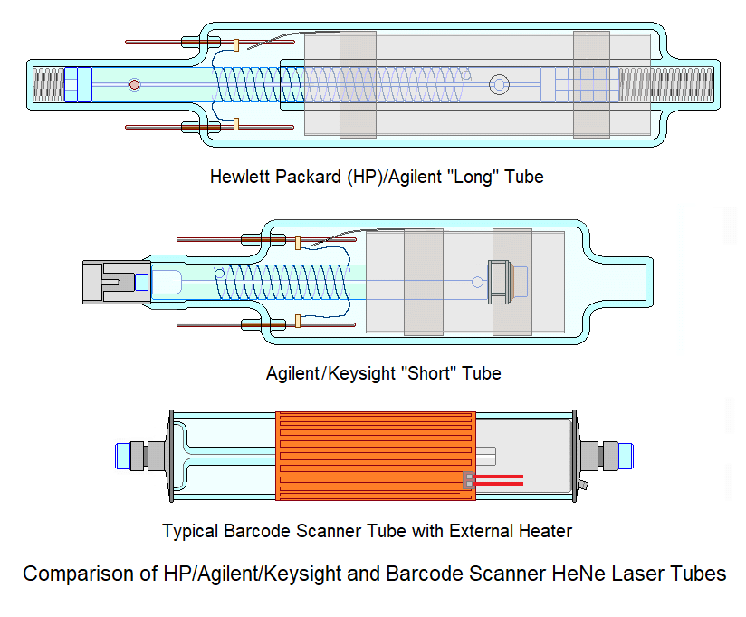
Versions of the Long tube were used from the early 1980s through the early 2000s. The Short tube appeared in the early 2000s in high performance lasers, but has now replaced the Long tube for all models. Even though it is shorter :), the maximum output power is actually higher due it being a more optimal design.
For the HP/Agilent/Keysight tubes, the output beam comes from the cathode-end on the right. For a barcode scanner tube, it may come from either end depending on the original requirements. For a given length tube, anode-end output may result in slightly more power. As a practical matter, It doesn't make much difference except in mounting and avoiding the high voltage. ;( :)
To use a barcode scanner tube as a total drop-in replacement or substitute for a HP/Agilent/Keysight tube would in principle require knowing its optical frequency, which depends on several factors including the specific isotope ratio of the neon in the tube, and it pressure and temperature. This could be measured by beating (heterodyning) its locked output with that of a healthy HP/Agilent/Keysight laser or other wavelength reference laser. Performing a test like this is not that difficult, requiring basic optics for combining the beams and a fast photodiode and RF spectrum analyzer or oscilloscope. But the error would probably be less than 1 part per million (ppm) at most, and from experience, likely to be a small fraction of that. As a practical matter, a change of 1 degree C in temperature or 2.5 mm/Hg in pressure of the overall system (not the laser tube itself) results in a similar change in wavelength, so uncorrected environmental effects would dominate. Thus if a $100 barcode scanner tube-based laser was substituted for a $10,000 Keysight laser, it might very well go unnoticed. But that's still not a good reason to install one in your FAB! ;-)
The primary functional difference would be that cavity length control would use an external heater attached to the tube, typically either a commercial thin-film Kapton heater or wound with wire for the heating element. Such an implementation might not be considered as elegant, but the resulting performance is similar.
The primary downside of using standard tubes is that they do tend to have a somewhat shorter life - typically 2 to 3 years versus 3 to 5 years in 24/7 service. This is due to the smaller gas volume and differences in the cathode material. But the cost is likely to be less than 1/10th that of the custom tubes.
Beam Expander/Collimator:
For the beam to be useful in an interferometer, it needs to be well collimated. The divergence of a diffraction limited beam from a single spatial mode laser like this is inversely proportional to diameter so a larger diameter beam can be better in this regard. It is also easier to align and provides more area minimizing the effect of the edges in cube corner where hitting them is unavoidable.
The raw beam from the typical small tubes to be used in this system has a diameter of only around 0.5 mm with a theoretical minimum divergence of around 1.7 mR. But many have a larger divergence - as much as 8 mR by design from the original barcode scanner application. Thus, additional optics are required to collimate the beam. The most common arrangement is a Galilean or Kepler telescope consisting of a pair of lenses. The one closest to the laser has a short focal length and expands the beam while the second one has a longer focal length and collimates it. The expansion factor is the ratio of the focal lengths. The difference between the two types is that the Galilean telescope uses a negative lens while the Kepler telescope uses a positive lens for the beam expander. The only practical differences are that the Galilean telescope is slightly more compact and the beam doesn't focus anywhere (which is really only relevant for high power pulsed lasers).
Based on the physical size of the interferometer optics that will be used with the system under consideration here that are NOT single beam configurations, a 2.5-3 mm beam is optimal so that a pair of lenses of 9 and 54 mm or thereabouts will be suitable. However, the single beam configurations would be better using a 5-6 mm beam since they will be hitting the cube corner where there are edges. Thus 9 and 108 mm lenses could be used. For short range displacements of a few cm, a smaller beam as narrow as 1 or 1.5 mm would be acceptable using a single lens collimator.
Based on the ultimate divergence, a 3 mm beam will have a useful range of around 1 meter while a 6 mm beam is good to 5 meters or more. The largest common beam diameters used with these systems is 9 mm for a range of more than 20 meters.
Tube Heater:
To generate the F1/F2 components requires that the lasing mode be centered between the split neon gain curve. This is done by controlling the distance between the tube's mirrors down to a precision of several nanometers. The first HP Zeeman lasers used a PieZo Transducer (PZT) behind the rear mirror inside the tube. [ PZT actually derives from the chemical formulation of most of these materials - lead zirconate titanate (Pb[Zr(x)Ti(1-x)]O3), but it's easier to remember the acronym based on the device name! ;-) ] This is not possible with a barcode scanner tube. While a PZT (or electromagnetic actuator) could be attached to one of the mirror mounts pushing and pulling on it externally, this would be rather complex.
Later HP lasers replaced the PZT with an electric resistance heater inside the tube, as depicted in the diagram, above. While the response of a heater isn't as fast, it is more than adequate and eliminates the high voltage required by the PZT. This just affects the time from power on to the laser being locked and ready. But for a system that is typically turned on and left on for hours - or forever - the difference between a few seconds and 5 minutes is irrelevant except to those in Marketing. :) A heater can also be wrapped around the outside of the tube with acceptable performance. In fact, lasers like these are often rebuilt by independent facilities using a conventional tube and external heater since genuine original tubes are not available from HP/Agilent/Keysight - they will only repair lasers, not sell new tubes, even to their customers. To the best of our knowledge, there never has been any other commercially available tube with an internal heater.
The heater is used to control the cavity length of the laser tube so that a stable split frequency is generated. A variety of schemes can be used for an external heater but the simplest is either a thin-film Kapton/Polyimide heater from a company like Minco or a Bifilar-wound heater using insulated copper "magnet" wire. The latter is much less expensive and perfectly satisfactory but somewhat tedious to wind by hand. Both types are used in commercial stabilized lasers.

The general scheme is that the heater is designed to raise the temperature of the tube assembly to comfortably above where it would be simply from the heating due to the electrical discharge inside the HeNe laser tube alone. Then a modest amount of power can maintain the temperature constant using a feedback loop. Typically, this is around one third to one half of the electrical power to the laser tube with the heater driver running at half of its maximum power. The thermal design is such that there is a controlled amount of heat loss through conduction and convection to the environment so that this balance can be maintained over an acceptable range of ambient conditions via the feedback loop.
Zeeman Magnet:
Commercial Zeeman-split lasers generally utilize a cylindrical Alnico permanent magnet in which the tube is mounted. Typical dimensions are: length of 4 inches, outside diameter of 2 inches, and inside diameter of 1.5 inches. The axial field strength measured near the center inside may be anywhere from around 150 to 400 Gauss or more depending on the laser model (e.g., 5517A, B, C, D). The REF or "split" frequency is determined primarily by the magnetic field, mirror spacing, and output mirror reflectivity. But the tube current, operating temperature, and other conditions also affects it. If the parameters are not selected carefully, one can end up with no beat at all or "rogue" modes in addition to the desired split mode. Rogue modes appear when additional longitudinal modes fit within the split gain curves. For these reasons, using the magnet salvaged from a (dead) HP or other Zeeman laser could result in poor performance, particularly with the barcode scanner tube if testing under operating conditions isn't done. It is trivial to reduce the magnetic field to any arbitrary value, and usually possible to increase it to beyond 500 G with an easily constructed magnetic pulser. So, using a commercial cylinder magnet is always an option but its field may need to be adjusted.
However, a variety of other approaches for the magnet are possible. A series of strong bar magnets about 4 inches in length surrounding the tube is the approach that was used by Teletrac as well as Spindler and Hoyer. Another option, which is probably the least expensive is to use many small rare earth magnets stacked and secured in a similar way. It has been possible to purchase a quantity of 50, N50 or N52 rare earth magnets 6 mm in diameter by 10 mm in length for around $6 delivered. (Increasing "N" parameter is supposed to correlate with strength, but I've found N50s to be 20 percent stronger than N52s from some suppliers.) When 49 of them are arranged in 7 stacks (like bar magnets), a sufficiently strong field is created to result in an acceptable split frequency using various barcode scanner tubes. This is typically 0.8 to 1.2 MHz if the magnets are snug against the tube with just a thick plastic spacer to provide electrical insulation. By adding magnets or pole pieces to concentrate the field, the split frequency can be increased. By removing magnets, or mounting them spaced from the tube by a non-ferrous cylinder, the split frequency can be decreased. A variety of other shapes, sizes, and types of magnets can also be used.
However, caution must be exercised to avoid ending up with a configuration that provides a field so strong that rogue modes are generated. Without a means of displaying the longitudinal modes in real-time using a Scanning Fabry-Perot Interferometer (SFPI), one simple method that usually is sufficient is to monitor the split frequency as magnets are added. If the increase in field strength does NOT result in an approximately proportional increase in the maximum split frequency, rogue modes are appearing. There may also be a visible distortion of the mode sweep profiles and the location where the F1/F2 modes are equal (which would be the lock-point) may end up with a reduced or missing beat signal. This is usually not so much an issue with the 50 rare earth magnets but could be if more are used, and is almost certain to occur if an HP-style cylindrical magnet is charged to the maximum possible field.
All the bars or stacks must all be mounted with the same N-S direction. Mounting the magnet with N-S or S-N flipped only reverses the sign of the feedback error term for locking and the sign of the displacement versus direction of motion for any given interferometer configuration. It's not really even necessary to know this when constructing the tube assembly unless one is a stickler for consistency. :) In that case, make it the same as any HP Zeeman magnet.

This shows the 49 magnets simply taped in place on a plastic pill bottle that slips over the laser tube/heater combination. The length and number of stacks can be traded off to optimize the performance, usually to achieve the highest split frequency. Where a tube is not cooperating and there is no beat at all, additional magnets can be added. With this approach, it's not likely the field will be too strong. For an experimental system, the split frequency is not critical as it only affects the maximum velocity that can have displacement unambiguously determined in the direction that reduces the MEAS frequency. However, too weak a magnetic field will result in no splitting at all, or an unstable output. Something around 1 MHz is a comfortable minimum which should be achievable with readily available magnets. But a somewhat lower split frequency is fine. Not all tubes will work with this relatively weak magnetic field, though most will work with a genuine HP/Agilent cylindrical magnet. But that would be cheating. :) So, the best option is to be able to select among several short tubes to determine which is best. A rough measure of the effect of the magnet in producing a Zeeman beat is to observe percentage of time or duty cycle during mode sweep during which there is a beat - the it is, the more effective the magnet is in overcoming the asymmetry of the tube.
In order to test for the split frequency, the tube must be powered inside the magnet while monitoring its output with a high speed photo-detector behind a polarizer. A suitable detector can be constructed using almost any small silicon photodiode, a 9 volt battery (or power supply) to back bias it, and a load resistor of a few k ohms, with the vertical input to an oscilloscope across the resistor. As the tube warms up and the cavity expands, the lasing mode will drift through the neon gain curve which is split by the magnetic field. When it is in the region where the split gain curves overlap, there will be a beat. Generally, it will be present for only a part of the mode sweep cycle, but then appear and vary in amplitude and frequency. Determining what exact frequency will correspond to the usable split frequency can be tricky for the barcode scanner tubes with relatively weak magnetic fields, but it will probably be where the amplitude of the beat signal is highest.
A test setup with a similar tube is shown on the left with a video of its behavior with power applied to the heater on the right.
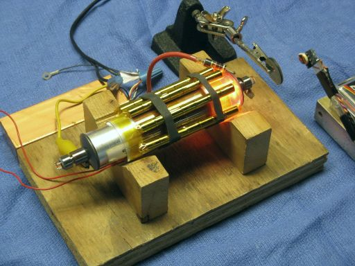
A tube that is particularly well suited for Zeeman will have the beat present for a larger part of the mode sweep cycle and/or the Zeeman beat will be present at a lower magnetic field. HP/Agilent tubes generate a beat down to close to 0 Gauss. Barcode scanner tubes may require 100 G or more.
Note that observing the split lasing mode directly (as opposed to inferring it from the scope or frequency counter display) is tricky. Spectrometers, optical spectrum analyzers, and wavemeters generally do not come anywhere close to having the required resolution, which works out to be order of 0.002 picometer (pm) to resolve two lasing lines separated by 1.5 MHz. The only relatively straightforward solution is to use a high resolution Scanning Fabry-Perot Interferometer (SFPI), also called a Laser Spectrum Analyzer (LSA). While most common commercial SFPIs have a resolution no better than 10 or 20 MHz, there are some special ones that go down to 1 MHz or less. And it's possible to build an SFPI with even higher resolution but that requires special mirrors, which are normally very expensive. However, sometimes surplus mirrors intended for a totally different application can be found that would be suitable. For more information, see the Laser FAQ chapter on Laser Instruments and Applications, specifically the sections starting with Scanning Fabry-Perot Interferometers.
Once the split frequency has been confirmed and optimized, the magnets should be secured with RTV silicone or other moderately high temperature adhesive. (Hot-melt glue may be problematic since the temperature near the heater may exceed 70 °C.) For my prototype, groups of 7 of these magnets were wrapped with 1 inch wide Kapton tape to make stacks that would not fall apart and these will held in place against the tube with elastic bands made of strips from a bicycle inner tube. That was sufficient for testing and used in the prototype, but something more permanent would be worthwhile so they don't shift over time.
Note that rare earth magnets may lose their magnetic properties in an irreversible way if they get too hot. The specific temperature depends on so-called "N Grade". Therefore, it may be desirable to insulate them from the actual tube and heater by a small amount. Alnico does not have this issue (at least not at any temperature that matters) but for a similar size magnet is much weaker.
Stabilization Feedback and REF Frequency Generation:
The Zeeman split modes are a pair of left and right Circularly Polarized (CP) longitudinal modes separated by up to a few MHz in optical frequency. CP modes aren't generally usable in a two-frequency interferometer so they must be converted to Linearly Polarized (LP) modes aligned with the X and Y axes of the laser for both the stabilization feedback and the actual F1/F2 output. In addition, the electrical REF signal needs to be generated for use by the measurement electronics. As noted above, this can be done by splitting off a portion of the main beam and putting it through a polarizer at 45 degrees with a sensitive optical receiver to convert that to an electrical signal, or the small waste beam out the back of the laser tube can be used with a polarizer (at any angle because it is circularly polarized) for this purpose.
To lock the laser tube using the heater to control cavity length at the optimal location to generate a stable two frequency output requires optical feedback. The most common technique is to use a Polarizing Beam Splitter (PBS) which separates the F1 and F2 components to be used for the feedback. Photodiodes generate current signals proportional to the amplitudes of F1 and F2 and the control loop adjusts the cavity length using the heater to force their amplitudes to be equal. When the slope of the error signal is correct, this will assure that the lock point is centered between the split neon gain curves where the Zeeman beat occurs.
Most commonly, the two photodiodes either feed trans-impedance amplifiers to buffer the F1/F2 signals. However, it's possible to simply reverse bias the PDs which then feed resistive loads to generate the require voltage signals. While the transfer function may not be quite as linear, somewhat noisier, and more susceptible to temperature changes, as a practical matter, this simplified approach has proven satisfactory for experimental purposes as long as the beam has enough intensity so that the photo-current will result in a few volts across the load (resistor to set gain in parallel with the input impedance of the A/D).
While it is theoretically possible to monitor the REF signal and lock based on its behavior (usually by either maximizing or minimizing its frequency depending on the specific conditions, or using a Phase Locked Loop with a crystal reference) these schemes end up being more complex and have practical issues which may make them inferior to the simpler dual mode approach.
Two common layouts are shown below.
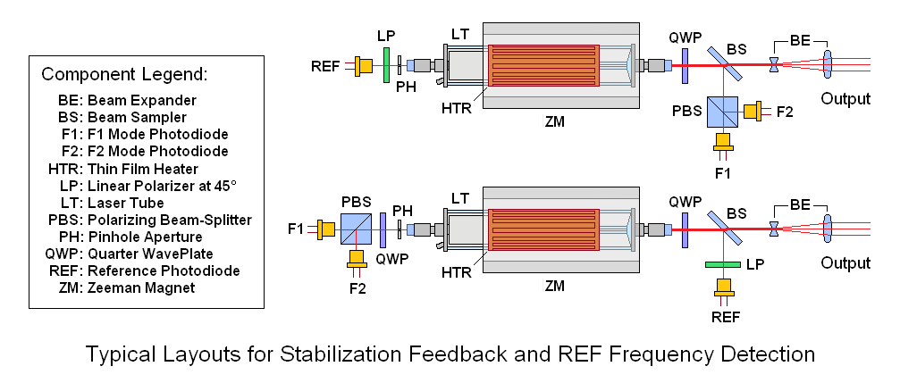
Degrees of freedom:
Degrees of freedom:
The QWP is oriented with its principle axes aligned with the X and Y axes of the laser. The LP is oriented at 45 degrees to obtain the beat signal from F1 and F2. The PH minimizes bore light to the photodiode(s).
The second approach requires an additional QWP, but provides a bit more flexibility in selecting the orientation of F1/F2 with respect to the X and Y axes polarity of the feedback signal. Essentially, it decouples the stabilization feedback from the output. Given the availability of low cost optical mica QWPs, the cost difference is not significant. But for all practical purposes, either can be made to work.
The REF signal must be derived from the actual output of the laser. A simplified optical receiver suitable for the REF signal is shown below:
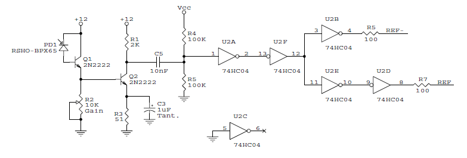
Using the waste beam can be a challenge due to its low power which is a somewhat random variable depending on the leakage through high reflector mirror, and may be 25 µW or less, and the polarizer will reduce it even further. This circuit should work be satisfactory but some part values may need to be modified and the it will require careful setting of the gain adjustment based on the actual optical power available. An HP 10780 (A, B, or C) optical receiver with its very effective automatic gain control would be satisfactory, but some might consider it cheating to use a commercial module. Cost-wise, 10780s can be really inexpensive on eBay, so a pair of them could be used initially (REF and MEAS) and then a photodiode and electronic circuit could be substituted later for each in the interest of purity. :)
Where there is no waste beam or it is too weak, the beam sampler in the output would be required.
As noted above, stabilization is done by controlling the laser tube's cavity length with a heater to an accuracy of a few nm. In order for this to be effective, both heating and cooling are required. Heating is implemented by driving the heater surrounding the tube with a variable source of power; cooling is by allowing convection and conduction to the environment. The tube must be preheated to a temperature significantly higher than ambient where the rate of temperature rise due to maximum power into the heater, and cooling with no power are similar, where the steady state is maintained with approximately 50 percent heater power. The controller therefore must preheat the tube and then maintain the lock point with feedback using the beam sampler and photodiodes by adjusting the heater power. Heating and cooling near ambient temperature using a Thermo-Electric Cooler (TEC) is possible but generally more complex both physically and in terms of electronics, and thus more expensive. And not needed.
Laser controllers can be implemented in many ways. In fact, locking as a proof of concept can be achieved with as few as 3 discrete electronic parts costing under $1. ;-) A more practical controller providing the required functionality can be implemented with a few dozen discrete electronic components and op-amps, but requires some skill to design, assemble, and test. And aside from some minor adjustments, these are not very flexible. Most modern systems are based on microprocessors with firmware (low level software) in charge of all functions. These provide flexibility for the designer, but must be considered a black box by the end-user since documentation is rarely available even to paying customers. For this system, a controller based on an Arduino compatible microprocessor board named µSLC1 is used potentially has the best of both worlds.

µSLC1 provides the following functions:
The algorithm is based on determining the tube temperature where around a 50 percent heater power will maintain as stable lock. This is achieved in 3 phases:
Since the entire laser takes awhile to come to thermal equilibrium - much longer than it takes to achieve initial lock - there is also an option to "relock" one or more times after a specified duration by repeating phases 2 and 3. This should result in improved resilience to ambient temperature changes.
A bidirectional communications link with a Windows PC (desktop, laptop, tablet, etc.) enables both monitoring of laser operation, and adjustment of almost every parameter affecting locking behavior.
The actual control loop runs at around 1 kHz using a timer interrupt. There are 8 "states" to implement the list of functions above, which determine exactly what is done on each pass through the loop. State transitions may be based on the duration in the state or a specific condition like the loop error.
The photo below shows an Axial Zeeman laser built almost totally from scratch. It doesn't even incorporate any HP/Agilent parts except for the recycled 5501A baseplate, but that doesn't count. :) The feedback for stabilization utilizes the waste beam from the back of the tube rather than the front (shown in the diagrams, above). The only part that is not present is a beam expander.

Only a hand-full of additional discrete electronic components are required to implement the controller.
The same setup could be configured as a (non-Zeeman) single or dual mode stabilized HeNe laser (assuming the tube is satisfactory for those) by removing the stacks of magnets surrounding the tube cylinder and Quarter WavePlates (QWPs) mounted in the blue sleeves at the rear and front (not visible). µSLC1 may also be used with at most minor modifications to the hardware and firmware to replace the controllers for most commercial stabilized HeNe lasers.
The µSLC1 Main Window is shown below:

Note that in a normal (non-Zeeman) dual mode stabilized HeNe laser, a suitable lock point will be where the amplitude of the two polarized modes are equal. Depending on which mode is selected at the output by a polarizer, its location may be on the high or low side of the neon gain curve, but they are otherwise equivalent. In a Zeeman HeNe, the lock point must be centered between the split neon gain curves for there to be a beat. However, there are two locations during mode sweep where the amplitude of the polarized modes are equal. The other one is more or less equivalent to the non-Zeeman case with the modes separated approximately by the longitudinal mode spacing (FSR) of the cavity and there is no useful beat from these since it would be greater than 1 GHz. Thus the sign of the error signal matters and it would be somewhat challenging to predict which is the desired one ahead of time, so if it locks at the wrong location and there is no beat, the outputs of the photodiodes in the beam sampler should be swapped. ;-)
The controller will run independently of the PC so that once the optimal locking parameters have been set up and stored in non-volatile memory, the PC is no longer needed.
µSLC1 has been coded on other Arduino-compatible platforms including the minimalist ATtiny85 Digispark.
Complete information on µSLC1 including firmware source code an be found at Micro Stabilized Laser Controller 1 (µSLC1) Installation and Operation Manual.
Most of the configurations are similar to common widely used implementations, though, a few do not have any commercial counterparts. However, they can all be constructed from generic optical components like those shown below. Of course, providing a stable mounting is more challenging than bolting together HP parts.
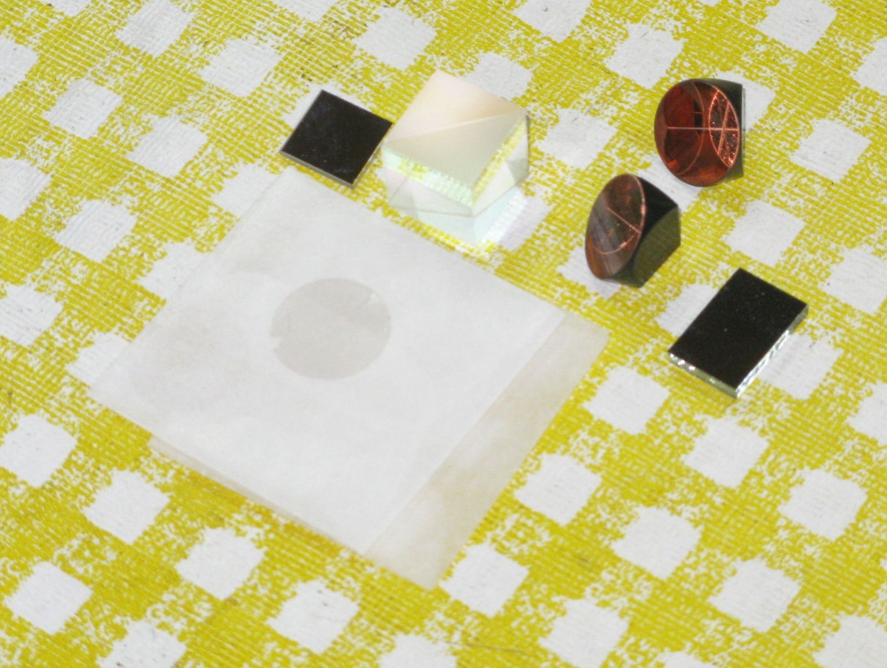
A suitable mounting arrangement most be provided which may include some amount of adjustment capability (though this is usually minimal). A 3-D printer can be put to good service in this regard. For short term experiments, ABS or other common feed stock will be more than adequate.
Due to the relatively low cost and availability of 1/2" (12.7 mm) PBS cubes, all of these use them rather than 1" (25.4 mm) PBSs. All but the last one use 1/2" cube corner trihedral prism retro-reflectors. That one is an example of a configuration that is precisely equivalent to the standard size Linear Interferometer but uses a pair of 1/2" PBSs. For those that are NOT single beam configurations, this requires a beam diameter of 3 mm or less and the working distance is limited to approximately 1 meter based on beam divergence considerations. (For the first configuration - with no retro-reflectors - the practical distance and displacement range is much smaller.) And most are designated "Compact" since they are about half the size of most of their commercial counterparts.. Due the small size, an angled mirror may be needed to pick off the return beam to a standard optical receiver like the HP/Agilent 10780. And the Single Beam versions could also be arguably called "Compact" since without the metal block, they, too, could be even smaller.
However, basic approaches like this aren't limited to home-built optics:
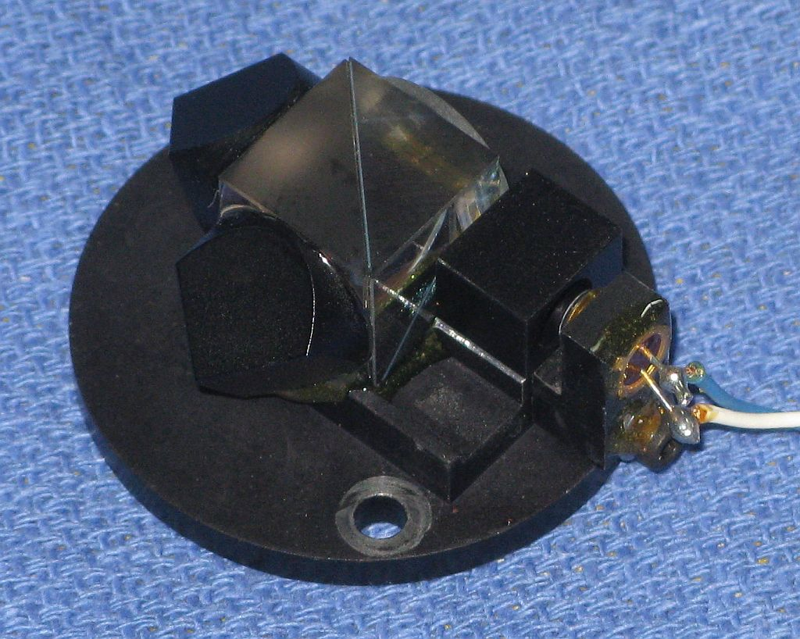
This is part of a combined interferometer/optical receiver assembly from a Teletrac TIPS-5 measurement system that uses basic components glued together without fancy expensive machined mounts: a 1/2" PBS, two 1/2" CCs, and a QWP, along with a bare photodiode.
Some of the optical components may NOT be AR-coated. The primary effect will be small losses from the Fresnel reflections from the uncoated surfaces. To avoid the possibility of these affecting operation of the interferometer, those components should be mounted at a very slight angle, not shown in the diagrams.
Note that in the diagrams below for the single beam versions, where a ray is drawn centered on a cube corner, the beam should be as wide as possible to minimize the signal loss from the apex or corners of the prism. In addition, the optical quality in terms of angle and polishing of the prism must be high enough to minimize wavefront distortion and signal degradation. The relative performance of genuine HP/Agilent, name brands like Thorlabs or Newport, or inexpensive Far East imports, is not known in this regard, though the general specifications are quite similar.
For our purposes using the heterodyne approach, the "Laser" is assumed to be a two frequency Zeeman HeNe and there is a linear polarizer at 45 degrees in front of the Optical Receiver. However, these configurations are generally equally applicable to the homodyne approach but with a single frequency laser and quad-sin-cos detector.
And while most of these configurations are not as critical in terms of alignment as the classic Michelson configuration, alignment is still important. In general, wherever beams interact in the interferometer, they should be as parallel as possible and overlap of the REF and MEAS beams should be maximized at the optical receiver.
Construction doesn't require fancy costly Newport-quality opto-mechanical parts. A 3-D printer can be used to create miniature mounts that will be more than precise and stable enough for experimental use. For more permanent installation, 5 minute Epoxy or UV-cure optical cement will suffice. (UV-cure optical cement is now inexpensively available for smartphone screen repair and can be cured using a $2 365 nm LED, resistor, and battery.) Where adjustable alignment is required, shims or split washers can provide the compliance needed.
The first group are for displacement measurements (change in linear position). Any of these can be modified for differential displacement measurements by mounting the reference mirror or cube corner (above the cube) on a second moving stage or whatever, possibly with the addition of suitable beam turning optics.
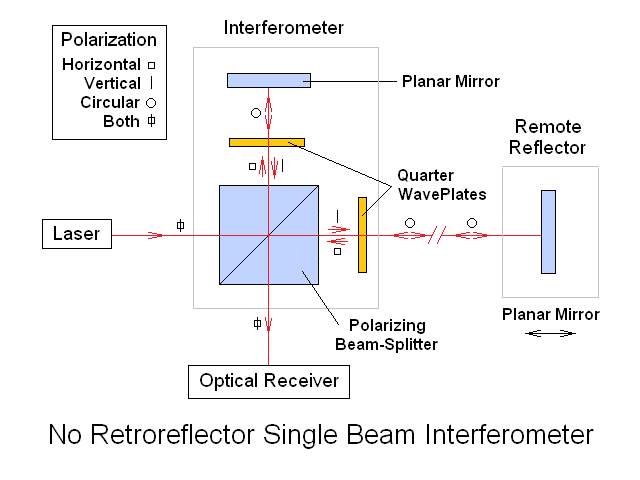
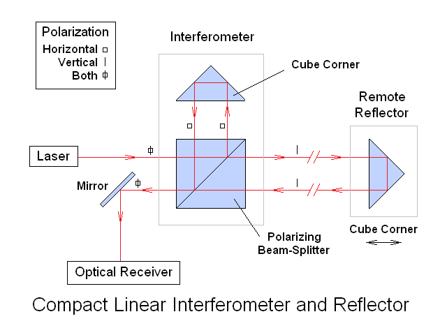
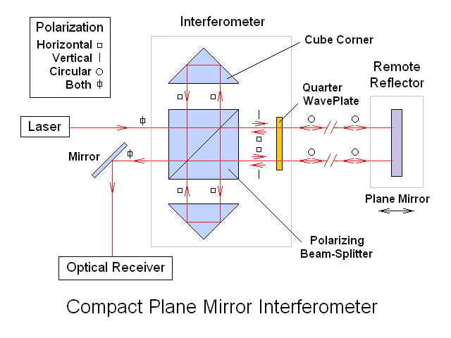
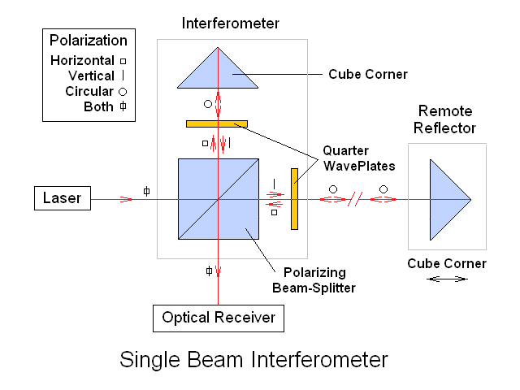
The next two are intended for angular measurements but could also be used for differential measurements if the retro-reflectors are mounted separately.
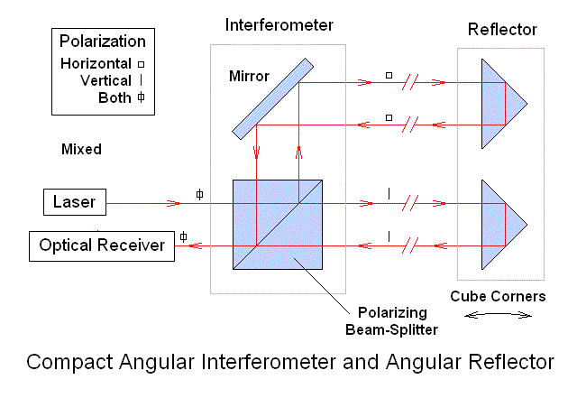
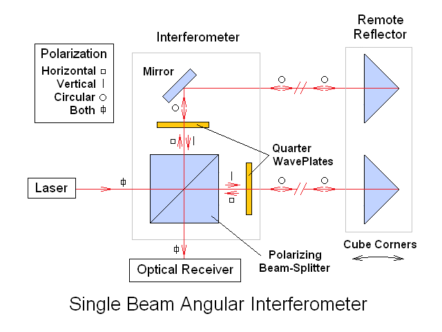
The Straightness Interferometer is more specialized and probably not something that a typical hobbyist/experimenter type would care about. If is included here for completeness should one have particular masochistic tendencies as these are very challenging to construct and align.
This implementation doesn't require a hard-to-find and expensive Wallaston prism. By adjusting the angle of the beams/mirrors, the range and sensitivity can be customized. Note that this implementation does require that the laser beam enter the interferometer at a slight precise angle, so setup does become trickier. The reference line for the straightness measurement is indicated in the diagram below in green. Also, the standard implementation is relatively insensitive to slight angular changes of the Wollaston prism; this one is not. Note that to provide full range, the mirrors will need to be moved slightly apart, or be longer than with an implementation using a Wallaston prism.
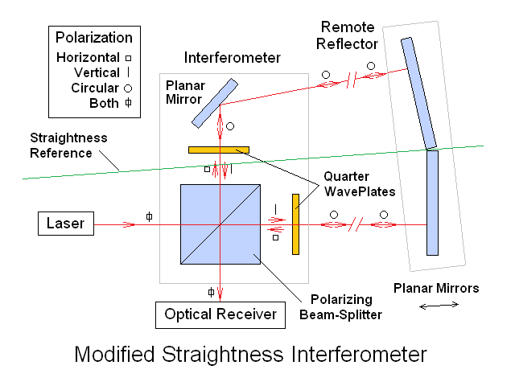
Flatness measurements may be made using the angular optics with the Straightness Short display mode and custom coefficient.
Finally, to create equivalent non-Single Beam configurations using a larger beam with longer range, it is possible to use a pair of small PBS cubes to create the equivalent of the standard 1 inch PBS. They can be any size that comfortably accommodates the desired beam diameter. 1/2 inch (12.7 mm) PBSs will work with beams up to 9 mm. A slightly smaller 2/5 inch (10 mm) PBS will be satisfactory for 6 mm beams. The cube corners would also double in size to 1 inch. The QWPs (if any) would need to either increase in size or could be implemented with a pair of smaller ones. The following is an example for the Linear Interferometer; others should be self evident.
In this implementation, the one inch PBS of the normal (e.g., HP 10702A) Linear Interferometer has been replaced with a pair of smaller PBSs. The performance should be similar and this allows for the use of inexpensive 1/2 inch PBS cubes while retaining the ability to use a 6 or 9 mm beam for longer range operation. A similar scheme can be used to make a full size plane mirror interferometer.
Note: The scale of the diagram below is double compared to the others. Each PBS is 1/2 inch while the Cube Corners are 1 inch. And there is no longer a need for a mirror to get the beam to the Optical Receiver as the spacing is adequate for it to go direct.
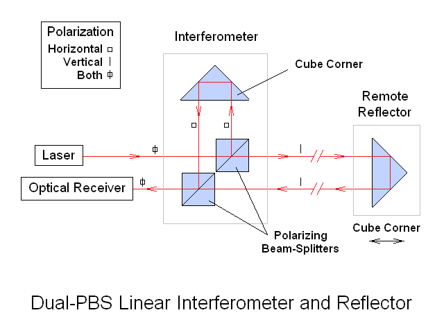
A variety of techniques can be used to extract this information but virtually all are ultimately based on digital counters for REF and MEAS whose difference is used to calculate displacement, or a single up/down counter with suitable logic to deal with race conditions. These result in a basic resolution of 1/2, 1/4, or 1/8 wavelength depending on the type of interferometer. Additional hardware, software, or firmware are then (optionally) used to extend the resolution down to the nm range. A variety of techniques can be used including Phase Locked Loops (PLLs) to multiply the REF and MEAS frequencies by 16 or 32 or more before applying them to the counters, or digital estimation of the phase difference between the REF and MEAS signals. PLLs are used in commercial systems like the HP 5508A while phase estimation is used in the system here - µMD1 - since it can be done entirely in firmware.
Early measurement displays like the HP 5505A were based on SSI-MSI TTL and occupied 5-1/4 inch high rack mounted units. Modern ones are typically implemented with a combination of microprocessors, FPLDs, and custom LSI parts.
LIPM is intended to use Micro Measurement Display 1 (µMD1) which runs on an inexpensive PIC32 microprocessor which includes all the required hardware except for the line receivers for REF and up to three axes of MEAS signals. Counters inside the PIC32 implement the basic measurement computations along with high performance firmware in C and MIPS assembly code which estimates the phase difference between REF and MEAS(s) to extend the resolution. The source is available (though modification is highly discouraged). The original version used the Digilent/microchip chipKit DP32 development board, but a drop-in replacement dubbed SG-µMD1 has been developed as the original one has been discontinued.

The graphic above show the specific example of a Linear Interferometer (LI) for displacement (change in position) measurements, with velocity calculated as the rate of change of position. By substituting different interferometer configurations, higher resolution displacement as well as angle, straightness, and other physical variables can be measured.
The µMD Graphical User Interface (GUI) runs on PC or laptop under Windows™ (XP/Vista/7/10 or later) via a USB interface. Raw measurement data from the PIC32 board can also be input directly to something like Excel™ or Matlab™, or a user-developed analysis application. The screenshots below show the displacement of a mirror on a PZT driven by a triangle waveform from a function generator. The p-p amplitude is around 60 nm and 10 nm for the left and right plots, respectively.


µMD1 Main Window Typical Display (Left: 60 nm p-p, Right:10 nm p-p)
Complete information on µMD1 can be found at Micro Measurement Display 1 (µMD1) Installation and Operation Manual.
µMD1 Firmware Architecture:
The µMD1 Firmware is primarily divided into two parts:
The only other routine is for initial setup.
Everything is written in C except for the low level phase estimation to extend the resolution which is in MIPS assembly code. The firmware source may be found via the µMD1 link, above.
The key feature of the Microchip PIC32MX250F128B-50I/SP processor that facilitates the µMD1 are its five 16 bit high speed hardware counters (or "Timers" as they are called). While there are numerous versions of the PIC32, many of them - even those that have many more features, greater performance, and pins - do not provide the required timer capabilities. Timer 1 is driven by the CPU clock (default of 40 MHz) and triggers an interrupt when it overflows. This is essentially the master clock for computation and data communications sending packets of data at several hundred Hz to the host. Timers 2-5 are clocked by the REF input signal (Timer 3) and MEAS input signals for up to 3 axes (Timers 5, 4, and 2). Firmware extends the length of the counters from 16 to 64 bits so there is never a possibility of overflow within the life of the Universe (or at least before this thing becomes obsolete!). These values are sent to the host via USB and are what all measurements are based on down to 1/2, 1/4, or 1/8 wavelength depending on the type of interferometer.
To extend its capabilities to higher resolution, code written in MIPS assembly language captures 31 samples of the peripheral word containing the REF and MEAS signal bits simultaneously at the full CPU clock rate into CPU registers, and saves them to memory. This is done multiple times during each interrupt and the resulting "waveforms" are then analyzed in C and averaged to compute a phase shift between REF and each of the MEAS signals. This Phase is sent as a fractional value called "Phase" along with the REF and MEAS counts. Note: To readers - even those inclined toward severe masochistic tendencies - modifications to the phase computation code should be avoided at all costs. :( :)
The µMD1 firmware comes up in single axis mode. If activity is detected on MEAS2 or MEAS3, it will switch to multiple axis mode. The primary difference is in the size of the data packet. A hardware reset is required to return to single axis mode. For most purposes this doesn't matter and is handled automatically by the GUI which will then display all the axes. However, it will affect the format for data capture in a user application.
There is support for environmental sensors in the firmware but by default it is disabled due to issues with reliability due to bugs buried deep in some of the C libraries. Therefore, entering temperature, pressure, and humidity values manually is highly recommended. :( :)
Some options for the moving component in a demonstration or test system include:
Power the laser and optical receiver and wait for the laser to become LOCKED. Except for the possible relock which may occur with µSLC1 to allow for the system to come to thermal equilibrium - the default is to do this once - it is ready for use.
Place the laser and other components in the general position of where they are to be located. The following applies to the most common Linear Interferometer (LI) and Plane Mirror Interferometer (PMI) configurations.
For the LI, make sure the direction of the beam into the interferometer is such that it is reflected to the local (reference) retro-reflector. For the PMI, the QWP should face the remote plane mirror.
Note that the alignment of the interferometer (LI or PMI) itself is not that critical and it does NOT need to be on a precision adjustable mount. For the LI the RR also does not need to be on a precision adjustable mount but needs to be mounted so that the direction and spacing of the outgoing and return beams are correct. Some degree of alignment is required but this can be accomplished by loosening the mounting screws to adjust pan and/or using shims to adjust tilt. For the PMI, the remote plane mirror should be on an adjustable mount because the reflected beam must be extremely parallel to the outgoing beam. This becomes more critical as the overall distance and range of travel increases.
For demonstration purposes, the reflector can be relatively close to the interferometer, but that is not required. It would certainly be more dramatic to have it across the room! However, for larger distances, the beam diameter should be 5 mm or larger and the quality of the cube-corner or mirror will be more critical. And, vibrations caused by the HVAC unit in the basement or a bus down the street will show up in the readout! Distance changes due to temperature fluctuations will be clearly visible as a slow drift.
With genuine HP/Agilent optics, it's relatively easy to get all this working together. Even modest misalignment can be tolerated, though the signal quality may degrade somewhat. How straightforward it is with improvised optics may be dependent on how well the individual optical components are positioned and secured. If this is done carefully, it should be similar. Once everything is aligned, make sure it's all locked down. Except for the remote reflector (cube-corner or mirror), nothing else should move (unless configured for differential measurements)!
When alignment is correct, REF and MEAS will be identical, except with a phase shift. Moving the remote reflector will result in the frequency of MEAS increasing or decreasing by an amount proportional to the velocity. This is best visualized with a dual trace oscilloscope. If both REF and MEAS are displayed and the scope is triggered using REF, then slow movement will result in MEAS shifting left or right on the screen. Even with no movement, there will be jitter from almost any vibrations, even those due to the cooling fan in your laptop. With poor alignment, REF and MEAS may still appear identical, but moving the remote reflector will result in either nothing changing, or losing counts so that returning to the original location will result in an incorrect reading. The MEAS waveform may appear noisy in the latter case though possibly not detectable by eye. Serious problems will trigger a PA Error from µMD1 but subtle ones may not. Note that a 10780F or 10780U can be used as the optical receiver, but these are intended to be fiber-coupled and lack the focusing lens and linear polarizer. But if added, it would be equivalent to a 10780C.
The diagram below is very similar to the one for the Zeeman laser without the Zeeman magnet:

This scheme is called "Dual Mode" because the two orthogonal modes are used for feedback, but one will be blocked before being inserted into the interferometer so the result is a single mode.
This type of laser may use a similar random polarized HeNe laser tube as the one in the Zeeman laser but it must have specific attributes to be it suitable. Specifically, its longitudinal modes must be well behaved.
Most random polarized lasers do not actually have polarization varying, well, at random. :) The term "random polarized" with respect to to HeNe laser simply means that nothing special is done to control the polarization. (I.e., no Brewster plate.) In the case of many red (633 nm) HeNe lasers, that means:
And note that this only applies to red HeNes, not even other color HeNes, let alone most other lasers. Murphy must have taken a day off when the HeNe laser was invented because these attributes end up being quite useful - in fact fundamentally important - for many applications. More specifically for the single frequency laser:
A laser tube with these characteristics would be considered "well behaved".
The simplest way to test for a well behaved random polarized laser is to put the output through a linear polarizer and monitor it on a graphing laser power meter or photodiode and data acquisition system. Adjust the orientation of the polarizer for the maximum amplitude of the mode sweep variation. That aligns it with one of the polarization axes. Then inspect the plot over a couple minutes (from a cold start to get the fastest mode sweep) for abrupt changes in amplitude. There should be none.
The following animation shows the mode sweep of a random polarized HeNe laser similar to the JDSU 1107 or 1108. The red and blue lines represent the amplitudes of the orthogonal polarized outputs. To actually view these live with a similar display requires an instrument called a Scanning Fabry-Perot Interferometer (SFPI) with a dual polarization detector. While commercial SFPIs cost several thousand dollars, an SFPI with these capabilities can be built as a nice student project at modest cost. It's all done with mirrors. ;-)
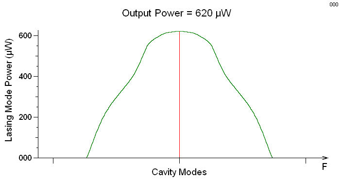
A linearly polarized HeNe laser of similar length would have both modes be the same polarization and same color. :)
The rate at which the modes pass through the neon gain curve will depend on how fast the tube is expanding from heating of the gas discharge, so it will slow down as it reaches thermal equilibrium from a cold start.
Plots of the two polarized modes for a well behaved tube (non-flipper) would look something like:

The plots cover the time range from a cold start to close to thermal equilibrium. Note how both the red and blue plots are continuous. A full mode sweep cycle at the start is a few seconds while at the end it is a few minutes. After that it would be irregular as just ambient air moving around will have a significant effect.
(For a linearly polarized tube with similar physical characteristics, the amplitude of the output would be the sum of the red and blue plots.)
The plots of a typical flipper might look like the following (zoomed in to a few mode sweep cycles to show details):

(The shape of the curves differ due to the tube not being the same model.) The vertical green line is the instant of the flip, which occurs quite close to the same location during each mode sweep cycle. However, experience shows that in the interferometer, there may be nasty stuff going on around that region and it won't be confined to an instantaneous event. The detected signal may be very noisy.
The actual implementation is virtually identical to that of the Zeeman laser except that (1) there is no magnet and (2) the feedback uses the amplitudes of the two longitudinal modes directly. µSLC1 itself is unchanged. And as noted, one of the two polarized modes is blocked with a linear polarizer so that the output of the laser is a single mode or single frequency.
For the homodyne systems, the detector is fundamentally different providing a pair of signals that are the a function of the phase difference between REF and MEAS, and a similar signal in quadrature - at 90 degrees to it - to provide direction information. Thus it's called something like "Quad-Sin-Cos" to encompass the quadrature and sin and cos outputs. This may then be converted to "Quad-A-B" where "A" and "B" are thresholded digital signals based on the Sin and Cos signals. These are then identical the outputs of common linear and rotary encoders and could use the same electronics to track displacement.
Unlike the optical receivers used for heterodyne, optical Quad detectors are not readily available unless on finds a sacrificial laser with built-in detector, or a detector intended for a homodyne interferometer to cannibalize. These are not common. So one must be built. Fortunately, it's not rocket science requiring some relatively simple optics and possibly a pair of trans-impedance op-amp circuits.
The basic detector using a single photodiode like the DET110 can generate a signal corresponding to light and dark fringes, but cannot provide direction information, essential for using an interferometer in metrology applications. The Quad-Sin-Cos decoder provides a pair of outputs that are 90 degrees offset from each-other in position, similar to the outputs of a rotary or linear encoder. If thresholded and converted to digital form, the result would be a Quad-A-B format.
Several very similar schemes are shown below:
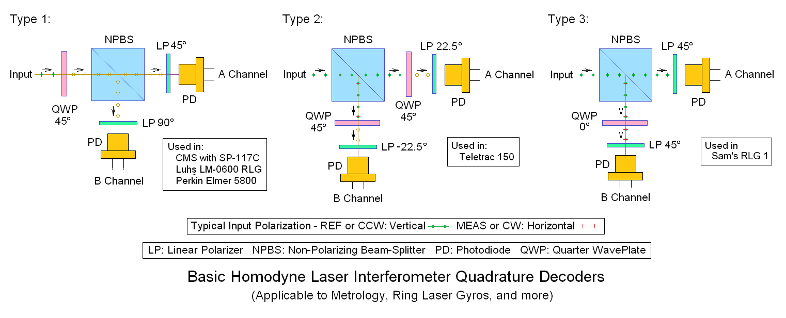
More specifically, an actual implementation using Type 3 with the angled Attenuator Plate (AP) can be quite simple:
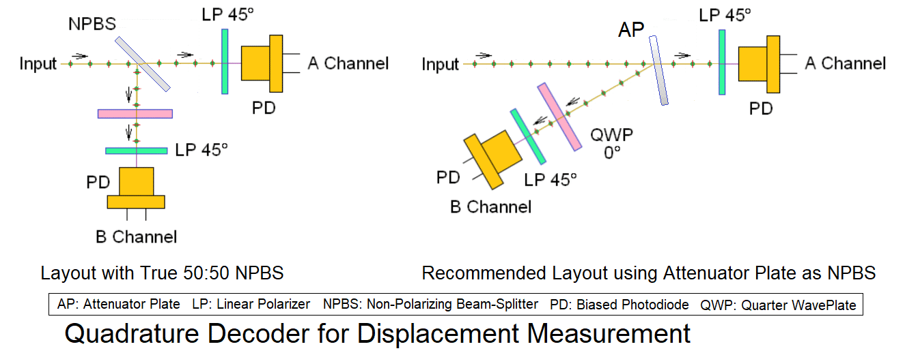
The AP is oriented close to normal to the incident beam to minimize the the difference in reflection and transmission of the polarized components which would occur if it were at 45 degrees, relatively close to the Brewster angle of 57 degrees. Using the AP also permits the relative amplitudes and of Channel A and B signals to be balanced without electronic adjustments.
The LP and LP+QWP can be implemented using the type of sheet used to enhance the contrast of displays like LCDs as shown below:
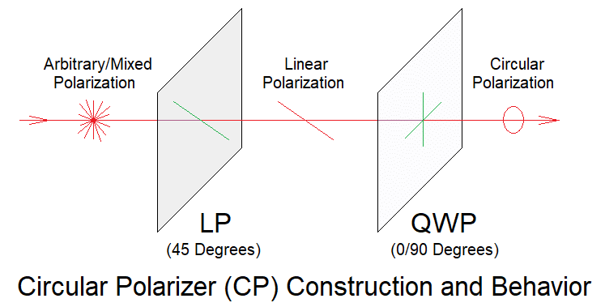
The CP is a sandwich of an LP and QWP with its optical axis at 45 degrees to the polarization axis of the LP. Sound familiar, huh? ;-) So it's used with the QWP-side facing the source for the A Channel and the LP facing the source for the B-Channel. Thus there is no need to mess with expensive and/or delicate QWPs at all. :) Enough CP material to construct several dozen of these decoders costs under $2. ;-)
In the case of the Quad detector, the gold PDs will usually be reverse biased to provide a linear response. But they don't need to be gold - 50 cent photodiodes will work just fine. It may be possible to get away without the biasing for initial testing but it will probably be needed if doing anything useful with the outputs. In addition, a third "Intensity" channel is almost always included in commercial implementations to accommodate variations in detected power due to the laser aging, changes in alignment, and contamination over time. The Intensity channel can be implemented electronically or optically with a non-polarizing beam-splitter at the input and additional photodiode. Although for this project, it can probably be dispensed with, at least initially.
Below is the modified diagram using the CPs for both the QWP and LP, along with the parts that can be used to construct it:


 >
>


These photos show a diagram for the preferred implementation of the Quad decoder itself, the typical parts, and 3 perfectly workable construction options, the first of which uses a small solderless breadboard and doesn't require any soldering. For that one, the AP and pieces of CP sheet could be glued to wires that would be stuck in holes. Or U-shaped pieces of wire could simply be stuck in holes to keep the CPs and AP in place. ;-)
To conclusively prove that the simple Type 3 scheme with CPs for the polarization optics actually works, a prototype version was installed on a Michelson Interferometer test-bed:

In the interest of expediency, it cheats and uses an NPBS rather than a plate beam-splitter or variable attenuator, two Thorlabs DET110s rather than bare photodiodes, but the QWP+LP for Channel B is a piece of CP (as in the diagram on the right, above) stuck to a microscope cover slip that is glued to a platter clamping ring from an ancient defunct hard drive. Got that? :)
The ugly scope screen shots below were taken using this setup:


Capturing a decent photo while twiddling the micrometer screw is quite challenging. ;-) But the conclusions are clear: This simple Quad decoder does its job well with a phase shift of ±90 degrees. If the remote mirror or retro-reflector were on an electronically controlled positioner like a loudspeaker voice coil or linear motor driven with a ramp, the waveforms would be textbook quality. ;-)
And in most cases, to achieve decent bandwidth with sufficient output signal level, a trans-impedance op-amp circuit will be required for each channel. This doesn't need to be complex but a bandwidth of several MHz with a fairly flat frequency response may be required. Whether it is needed will depend on the maximum required slew rate of the moving part of the interferometer. A fairly flat response to around 3 MHz is required for a velocity of 1 meter/second using a plane mirror interferometer. However, 1 m/s is REALLY fast, so a more modest slew rate won't require much bandwidth at all. An example of a suitable circuit is shown below.
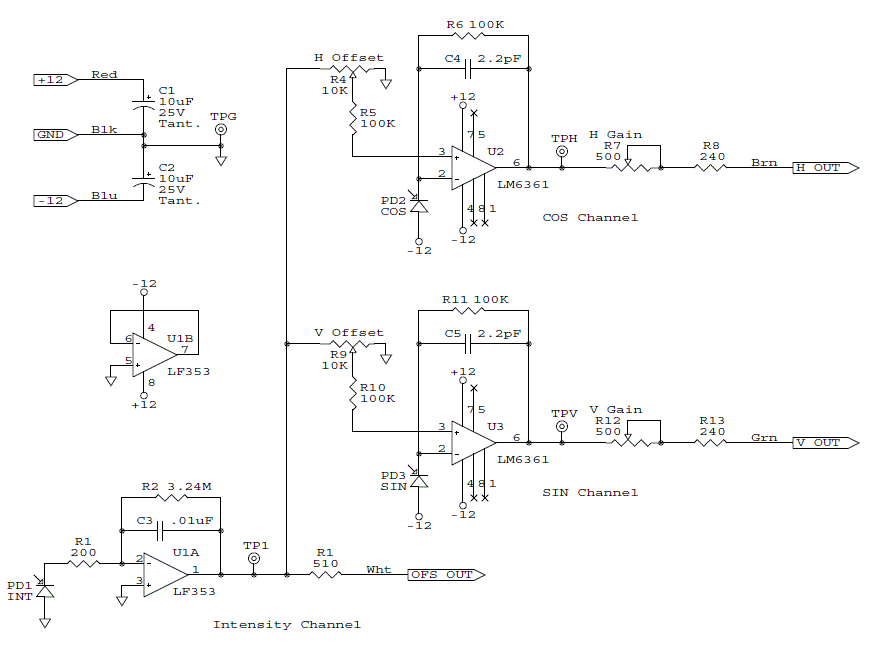
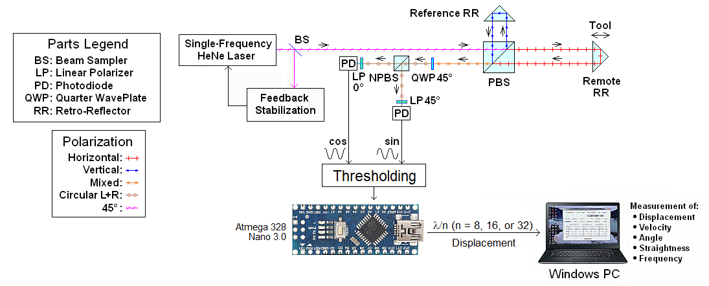
A typical interface circuit and version built on a solderless breadboard are shown below:
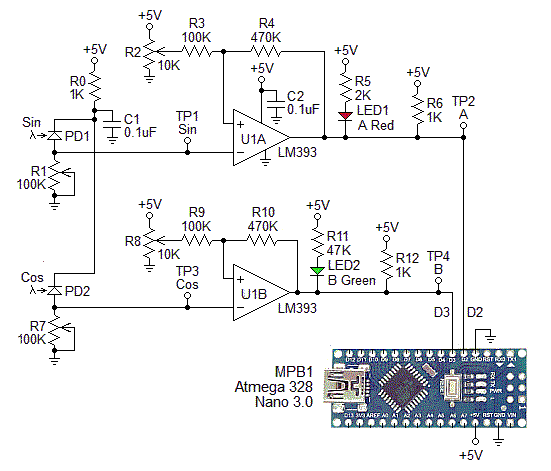
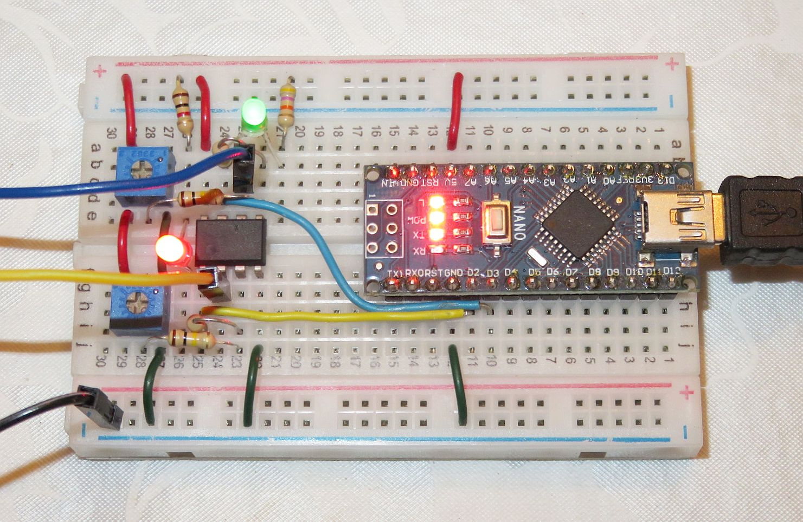
The same µMD GUI may be used as with the other systems and the native resolution is the same. But with the simple photodiode input circuit, the bandwidth is limited. And the low performance microprocessor also limits the slew rate. However, it's still more than enough to track the movement of something like micrometer-driven linear stage. On the plus side, the firmware is so simple that enhancements are easily added.
Such a undertaking is not for the lazy. For someone who has little or no experience with lasers and electronics, it may take several months to a year or more. For a tinkerer-scrounger type with some basic experience, it could be as little as a few days. Construction will require the fabrication of some mechanical parts, wiring up of electronics, and testing of the laser and controller. But this could make a nice college-level Senior Project if combined with some real application for precision measurement.
It is basically a combination of a stabilized Zeeman laser, generic interferometer optics, and microprocessor-based measurement display, and each can be done separately and then combined, or commercial alternatives can be substituted for selected ones if desired.
The result will be similar in performance to that of a $20,000 metrology system and the entire experience could be quite rewarding.
However, where enthusiasm is lacking, a half-hearted attempt will result in the parts ending up piled in a box in your attic next to the unfinished telescope mirror. :( Trust me, I know about unfinished telescope mirrors. :)
An adjustable weighted average to smooth data may be applied to the readout and graph.
HeNe Zeeman Laser:
Zeeman / heterodyne version ONLY
Stabilized Laser Controller (µSLC1):
Refer to the Micro Stabilized Laser Controller 1 (µSLC1) Installation and Operation Manual.
Interferometer optics:
These will handle most of the configurations describe above.
µMD0, µMD1, or µMD2 Measurement Displays:
Refer to the links in References, below.
-- end V2.02 --